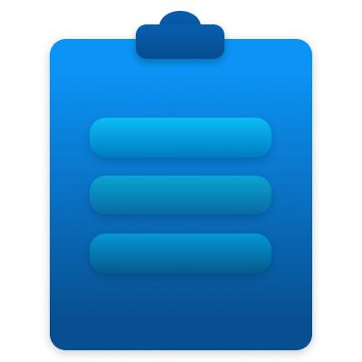
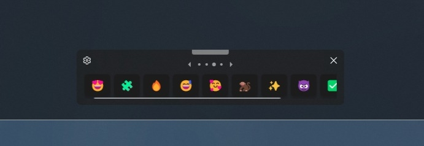
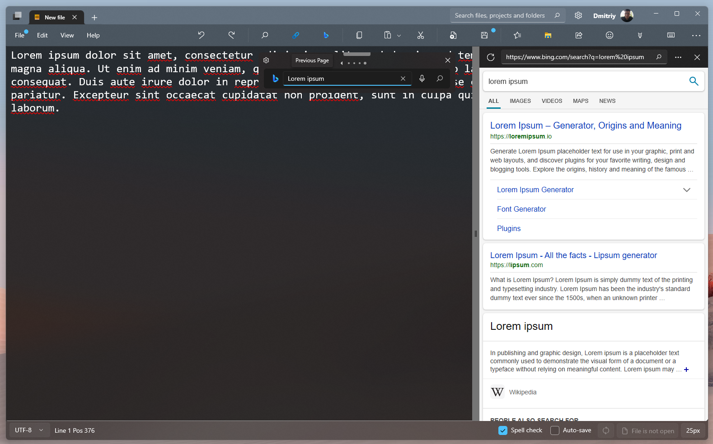
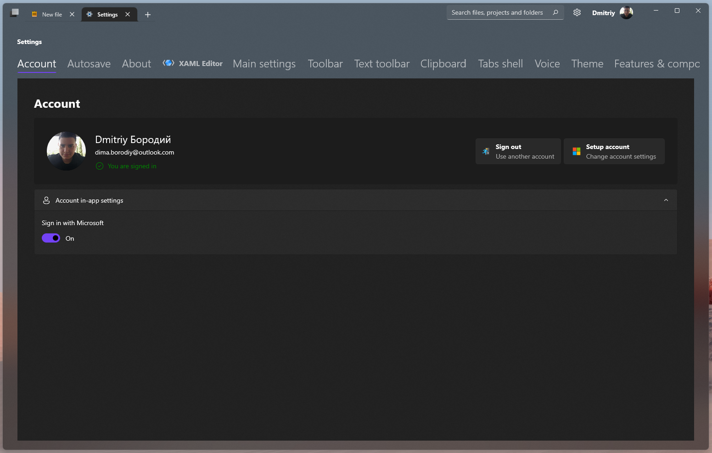
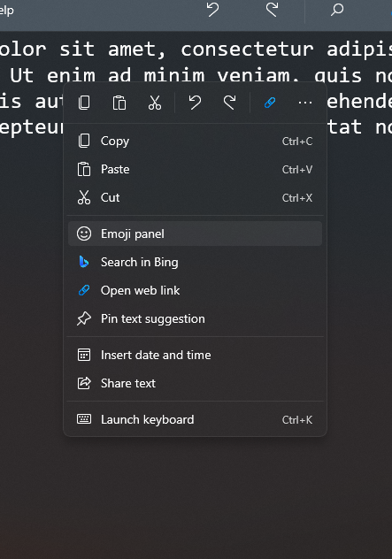

Enjoy new features in October 2022 update!☄️🚀⚡
October update gives you more features & capabilities. Here you can watch list of changes in October 2022 update aka version 2.4.

Color picker add-on
• New color picker embedded add-on was added to Power Editor(version 2.4).
❝
We blew that if you add a color palette addon directly to the editor, this will greatly simplify the life of some developers and not only developers. Now you can just tap on color picker addon button and pick color what you want.

Clipboard manager
• Windows clipboard manager now integrated to Power Editor(version 2.4). To manage your clipboard tap on arrow on insert button, after that you will see your clipboard history from your device. You also can delete items in history or clear all data. When you copy any text or code this adding to device clipboard history automatically.
❝
I was added clipboard manager support to Power Editor because I want provide users more convenient path to insert text.
Tabs bug fixes and improvements
• In this update, we did a little work to fix bugs with tabs and multitasking.
Links dialog(Notepad)
• Links view dialog was added in version 2.4. Now you can view all the links that are in the text document.
New features in app home page
• From version 2.4 you can customize home page.
Insert comment feature added
• From version 2.4 you can select code and make comment.
XAML Viewer added
• Since version 2.4, a XAML Viewer has been added to preview the XAML markup source code.

Text toolbar
• Text Toolbar simplifies work with the text, with it you can quickly access such things as Emoji, special characters and tips. It was presented in update 2.4.

Insert date dialog(Notepad)
• Insert date & time dialog UI was updated & and redesigned.
Spell check(Notepad)
• Spell check was improved. Bug fixes for Spell check in Notepad.
Web search was updated
• In this update web search have a lot of changes and improvements. From this update web search was integrated to text toolbar and can search in Google, Bing, Yahoo, DuckDuckGo and Wikipedia also. Now you can search any from your text or code editor.

Account integration improvements
• The Microsoft account experience has been greatly improved. In addition, it became possible to refuse the use of Microsoft account.

Context flyout improvements
• Now the pop-up context menu has become even more convenient. The order of items in the menu has been changed and an item has been added to quickly open the virtual keyboard.
How you can get update?
If you purchase Power Editor from Microsoft Store you can update for free without any problems. If you don't have Power Editor license or full version you can buy it in Microsoft Store. Buying Power Editor you support the Ukraine devs. 🇺🇦